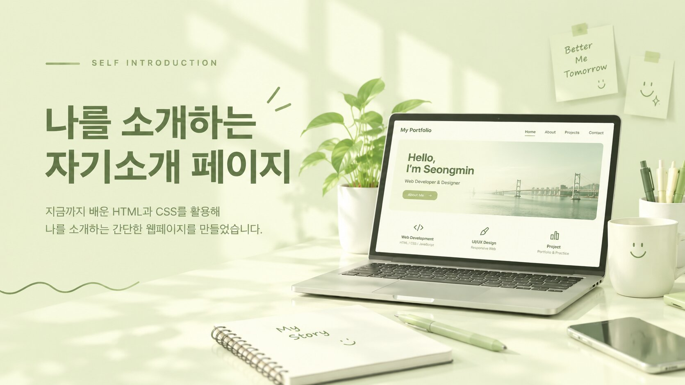
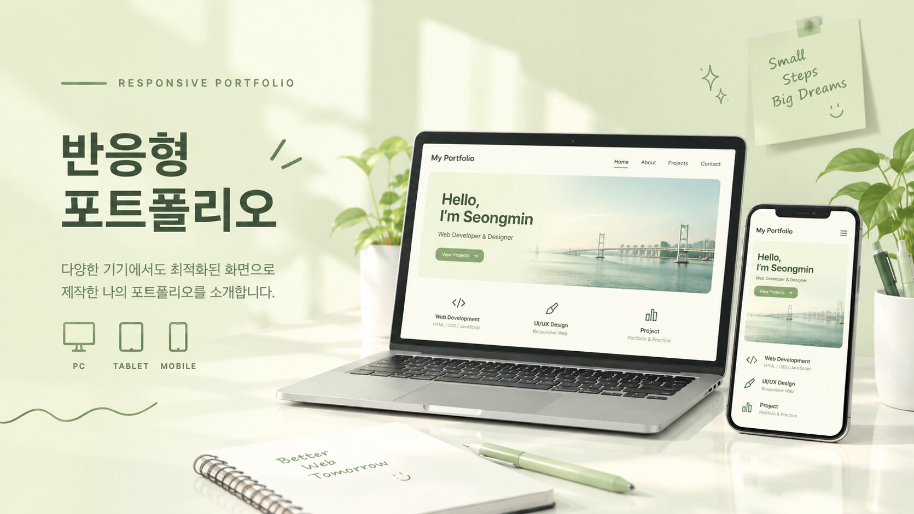
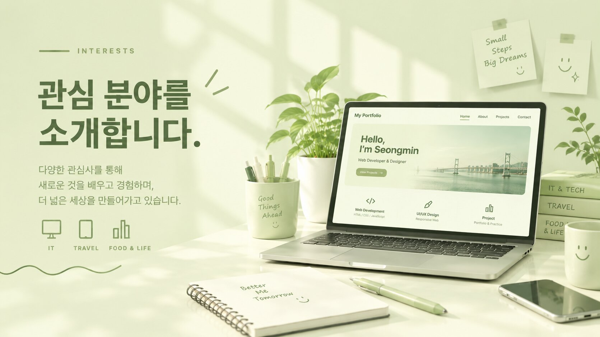

</>
HTML 시멘틱 태그
콘텐츠의 의미에 맞는 태그를 사용해 웹페이지 구조를 만듭니다.
STRUCTUREWEB DEVELOPER · IN PROGRESS
안녕하세요. HTML과 CSS를 배우며 웹의 구조와 디자인을 익히고 있는 이성민입니다. 정보를 알아보기 쉽게 정리하고, 누구나 편하게 사용할 수 있는 화면을 만드는 연습을 하고 있습니다.
01 / ABOUT ME
HTML, CSS를 배웁니다.
웹페이지가 어떤 구조로 이루어지는지 이해하고, CSS로 정보를 보기 좋게 배치하는 방법을 연습하고 있습니다. 아직 배우는 단계인 만큼 기본기를 탄탄히 다지고, 작은 프로젝트를 하나씩 완성해 나가는 것이 목표입니다.
02 / WHAT I'M LEARNING
기본기를 익히고 직접 적용해 보는 중입니다.
콘텐츠의 의미에 맞는 태그를 사용해 웹페이지 구조를 만듭니다.
STRUCTURE요소를 가로·세로 방향으로 정렬하고 간격을 조절합니다.
ALIGNMENT행과 열을 활용해 카드와 콘텐츠를 체계적으로 배치합니다.
LAYOUT화면 크기에 따라 콘텐츠가 자연스럽게 배치되도록 만듭니다.
RESPONSIVE03 / SELECTED WORK

PROJECT 01나의 소개와 관심 분야를 하나의 페이지에 보기 쉽게 정리합니다.

PROJECT 02관심 있는 주제와 학습 목표를 카드와 표로 구성합니다.

PROJECT 03PC와 태블릿, 휴대폰에서 모두 편하게 볼 수 있는 포트폴리오입니다.
04 / CONTACT
궁금한 점이나 나누고 싶은 이야기가 있다면 이메일로 연락해 주세요.